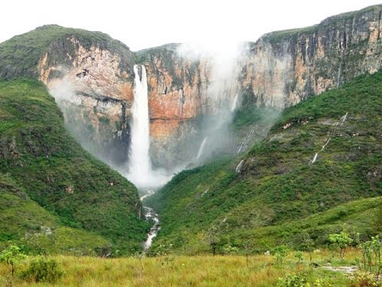

Localização
A Cachoeira do Tabuleiro é um espetáculo natural de tirar o fôlego. Com uma queda d'água imponente de aproximadamente 273 metros, é a maior cachoeira de Minas Gerais e uma das mais altas do Brasil. Seu cenário deslumbrante, rodeado por montanhas e vegetação exuberante, cria uma atmosfera mágica. Os aventureiros podem se refrescar em suas piscinas naturais e os amantes da natureza podem apreciar a biodiversidade da região. A Cachoeira do Tabuleiro oferece uma experiência única e memorável para todos os visitantes.